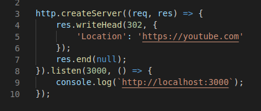

Make node app run faster
To speedify app at least add async package to your project
npm i async --save-dev. After add parallel function
and express middleware with this function as on image below

If you wanna read in details you can follow the link
5 steps to making a Node.js app faster
The simpliest redirection logic
To implement redirection logic the easiest approach would be set response code to 302 and add response header property Location.
Example of successful implantation you can see on image below

How to deploy simple API with AWS service
Due to AWS being a serverless resource, firstly you need to install the serverless package globally on your PC with npm.
For this purpose run the next command into the terminal sudo npm i serverless -g.
After that, you need to configure your credentials with the next command:
serverless config credentials --provider aws --key your_key --secret your_secret.
You can read how to get key and secret in this article:
Deploying a Simple Serverless Node.js Application on AWS Lambda Functions
.
After this step, you can select the desired language and create a project based on Serverless templates.
A list of all available templates follows by the next link
Available Templates
How to fix GitHub ERROR: DEPLOY DENIED

Open terminal and write next commands
$git init
$git remote add origin git@github.com:juliamariaanna:presentation.git
Important to use SSL link, not https!
$ssh-keygen -t ed25519 -C "ekt_1@ukr.net"
Name file key And left pasphrase field empty
$ssh-add key
$cat key.pub
Important to copy all returned text (from ssh-ed25519
to ekt_1@ukr.net)
After you have run all above comands go to profile settings

Go to SSH and GPG keys section
Click on New SSH key

Paste copied text to Key field
Give the name by filling Title field
After key will be created, do all as usual
$git add .
$git commit -am "comment"
$git push --all
How to enable JQuery, Ajax and Recaptcha
To enable JQuery and Ajax accordingly we need connect with its library.
So, just add this script to your site
<script src="https://cdnjs.cloudflare.com/ajax/libs/jquery/3.6.0/jquery.min.js">
</script>
With recaptcha the same situation, just add this script to your site
<script
src="https://www.google.com/recaptcha/enterprise.js?render={your site secret}">
</script>
Generate site secret for your site you can by following the link
Generate site secret
To test if libraries were enabled successfuly open your .html file in any browser,
open DevTools and type grecaptcha in console if everything is ok it shuold
return you an
object with enterprise field - this action checks if recapthca was enabled
To test if ajax is avaliable now open Dev console and type
$.ajax if everything is ok it should return you a function